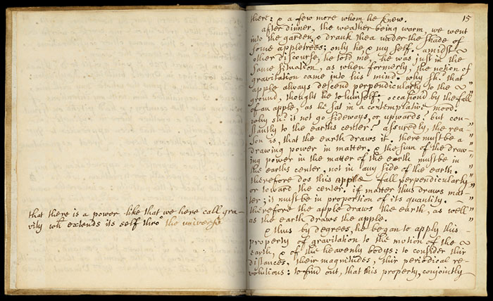
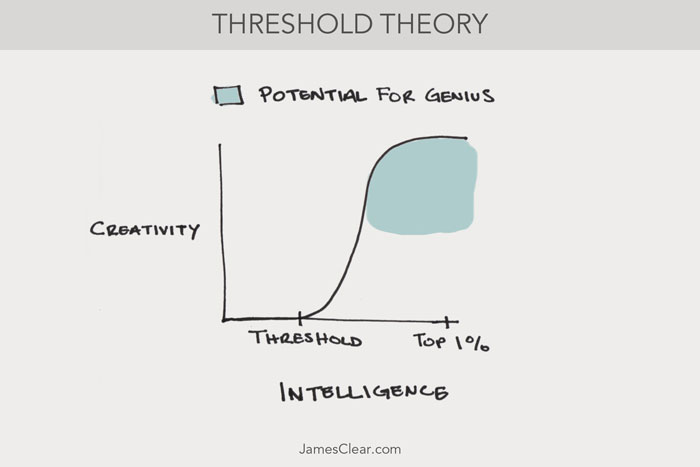

Creativity Is a Process, Not an Event
In 1666, one of the most influential scientists in history was strolling through a garden when he was struck with a flash of creative brilliance that would change the world.While standing under the shade of an apple tree, Sir Isaac Newton saw an apple fall to the ground. “Why should that apple always descend perpendicularly to the ground,” Newton wondered. “Why should it not go sideways, or upwards, but constantly to the earth 's center? Assuredly, the reason is, that the earth draws it. There must be a drawing power in matter.” And thus, the concept of gravity was born.The story of the falling apple has become one of the lasting and iconic examples of the creative moment. It is a symbol of the inspired genius that fills your brain during those “eureka moments” when creative conditions are just right.What most people forget, however, is that Newton worked on his ideas about gravity for nearly twenty years until, in 1687, he published his groundbreaking book, The Principia: Mathematical Principles of Natural Philosophy. The falling apple was merely the beginning of a train of thought that continued for decades.

The famous page describing Newton's apple incident in Memoirs of Sir Isaac Newtons Life by William Stukeley.
Creative Thinking: Destiny or Development?
What does it take to unleash your creative potential?
As I mentioned in my article on Threshold Theory, being in the top 1 percent of intelligence has no correlation with being fantastically creative. Instead, you simply have to be smart (not a genius) and then work hard, practice deliberately and put in your reps.As long as you meet a threshold of intelligence, then brilliant creative work is well within your reach. In the words of researchers from a 2013 study, “we obtained evidence that once the intelligence threshold is met, personality factors become more predictive for creativity.”

FOOTNOTES
One study tested 56 backpackers with a variety of creative thinking questions before and after a 4-day backpacking trip. The researchers found that by the end of the trip the backpackers had increased their creativity by 50 percent. This research supports the findings of other studies, which show that spending time in nature and increasing your exposure to sunlight can lead to higher levels of creativity.
Creativity is a process, not an event. It's not just a eureka moment. You have to work through mental barriers and internal blocks. You have to commit to practicing your craft deliberately. And you have to stick with the process for years, perhaps even decades like Newton did, in order to see your creative genius blossom.